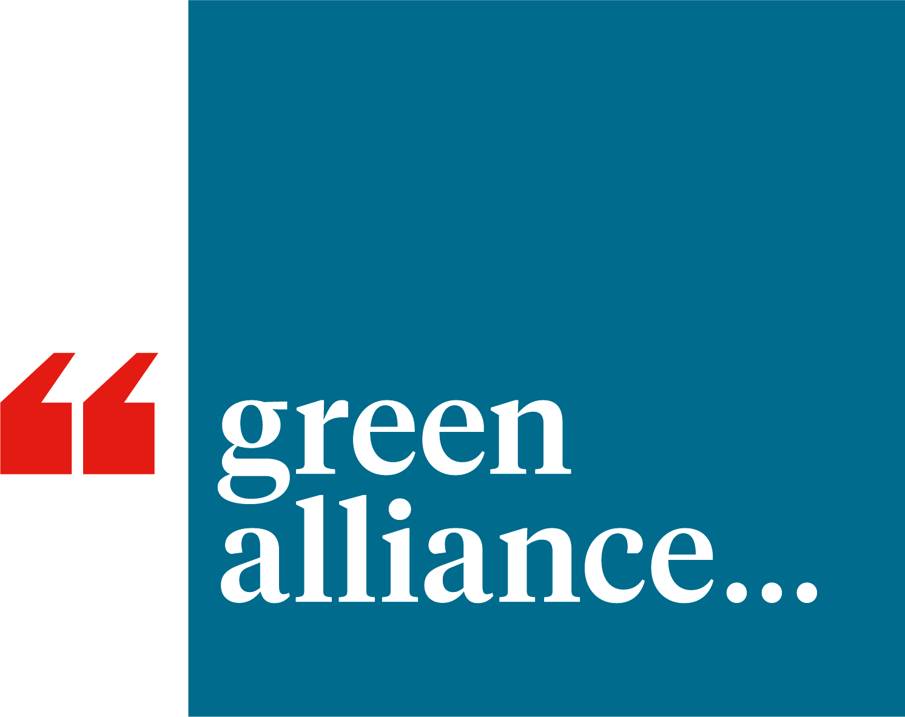

Interactive maps of UK rail flows:
Visualising costs and times
These interactive maps accompany the Green Alliance report Next Stop, Better Rail.
- Generalized costs assume a value of time of £15/hour. Real values of time vary considerably depending on the traveller and trip purpose (usually less than this for leisure trips and more for business trips).
- Train costs are median values paid for a sample of ticket sales without railcards, reflecting a mixture of walk-up and advance tickets.
- Train times are median values based on sampled customer departure times.
- Car fuel costs are estimates from Trainline. Individual cars vary substantially in fuel costs. There are also further costs of owning a car besides fuel (depreciation, maintenance etc), but these maps use fuel cost alone as it is likely to have the greatest influence on mode choice for an individual trip.
- Full details of the method and data sources can be found in the technical report.
| Map data | Most journeys | Most passenger km | Principal routes between 10 largest urban areas |
|---|---|---|---|
| Perceived generalized cost of rail vs car |  |
 |
 |
| Relative price of rail vs car |  |
 |
 |
| Relative time of rail vs car |  |
 |
 |
These maps were produced by Crispin Cooper, Cardiff University. The work was funded by the Foundation for Integrated Transport, and Trainline. The project was managed by Green Alliance. The maps contain data copyrighted to:
- Trainline, anonymous data released under license for this project
- Office of Road and Rail, released under Open Government License v3
- OpenStreetMap contributors, released under the Open Database License
- Ordnance Survey (C) Crown Copyright and Database Right 2020-24
The interactive maps are built using the deck.gl and pydeck libraries.